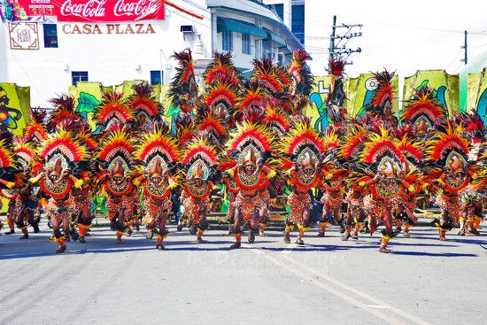

The Dinagyang Festival is one of the biggest and most colorful religious and cultural festivals in the Philippines, held every fourth Sunday of January in Iloilo City. It is celebrated in honor of the Santo Niño (Child Jesus) and showcases vibrant Ati warrior-inspired performances, rhythmic drum beats, and spectacular street dancing.

The festival is known for its powerful choreography, artistic body paint, and strong community participation. It continues to attract both local and international tourists each year.